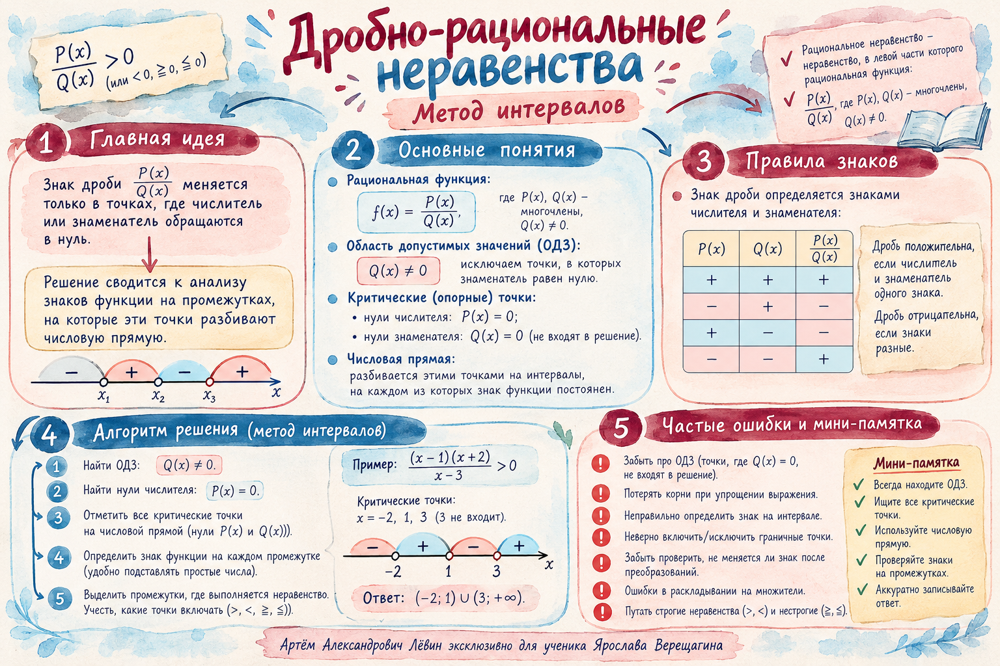

Положительный множитель
x² + x + 1
D = 1 − 4 = −3; многочлен всегда положителен.
Учебный журнал / 23 октября 2026 / ОГЭ
У дроби два источника граничных точек: числитель и знаменатель. Разберём, какие точки включать, как проверять знаки и почему приведение к нулю определяет успех решения.
01 / Конструкция метода
Универсальная отправная точка: привести выражение к одному отношению многочленов и сохранить исходное ОДЗ.
Перенести всё влево, справа оставить 0. Если надо — общий знаменатель.
Отдельно решить P(x)=0 и Q(x)=0; выколоть нули знаменателя.
Определить знаки на промежутках и выбрать нужные, проверив границы.
Запомните: нельзя умножать неравенство на знаменатель неизвестного знака без разбора случаев. Его знак участвует в результате.
Проверить влияние знаменателя ↗02 / Находим границы
Одна и та же числовая ось используется для нулей числителя и знаменателя. Их роли различаются.
| Источник | Когда точка подходит? | Обозначение |
|---|---|---|
| Числитель P(x)=0 | Для ≥ или ≤, если Q(x) ≠ 0 | Закрашенная |
| Знаменатель Q(x)=0 | Никогда | Выколотая |
Разбор 01 / Две границы
Числитель обнуляется при x = −1, знаменатель при x = 1. Калибровка: x = 0 → 1/(−1) = −1, значит средний интервал отрицательный. Внешние промежутки — положительные.
Разбор 02 / Четыре границы
Числитель: 2, 3. Знаменатель: 5, 7. При x = 0 значение 6/35 > 0. Для простых корней знак меняется при каждом переходе: +, −, +, −, +.
При чётной кратности корня знак может сохраняться. Если сомневаетесь, возьмите отдельное пробное число из каждого интервала.
Исследовать четыре точки ↗03 / Преобразование
Дробь должна быть приведена к виду с нулём справа. Именно получившееся выражение проверяют пробным числом.
Числитель −20 отрицателен при любом x. Дробь положительна тогда, когда знаменатель отрицателен. Корни знаменателя: −8 и −1.
Подстановка x = −4 в преобразованную дробь даёт −20/(−12) > 0. Границы выколоты: в этих точках деление невозможно.
Изменить пробное x ↗04 / Работа с многочленом
Отсутствие действительных нулей числителя означает, что на оси отмечаем только найденные нули знаменателя.
D = 1 − 4 = −3; многочлен всегда положителен.
Нулей нет. Для знака дроби достаточно знака знаменателя.
Сверху x(x² + x + 1), снизу (3x − 5)(3x + 5). Корни: −5/3 и 5/3 — выколоты, 0 — нуль числителя. Число 0 для калибровки не подходит; при x = 1 дробь равна −3/16.
Для уравнения x⁴ − 2x² − 8 = 0 вводим t = x² с ограничением t ≥ 0. Получаем (t − 4)(t + 2) = 0. Значение t = −2 исключаем, из t = 4 следует x = ±2.
Правило нулевого произведения применимо только к A·B = 0. Здесь есть дополнительное слагаемое +1. После замены t=x² получается t² + t + 1 = 0, дискриминант −3, действительных корней нет.
05 / Контроль ошибок
Отметьте эти пункты на собственном решении, прежде чем сравнивать с готовым ответом.
Исходное ОДЗ: x ≠ 3 и x ≠ 1. После сокращения x − 3 запрет x ≠ 3 сохраняется.

06 / Самостоятельная тренировка
Отмечайте выполненные задания. После решения откройте ответы и проверьте исключённые точки.
Выполнено: 0 из 10
№ 4 — сначала привести к нулю; № 8 — двойной корень; № 9 — запрет после сокращения; № 10 — замена t = x².